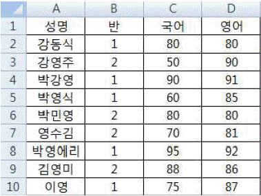
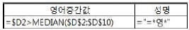
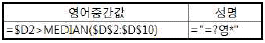
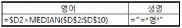
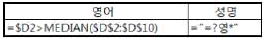
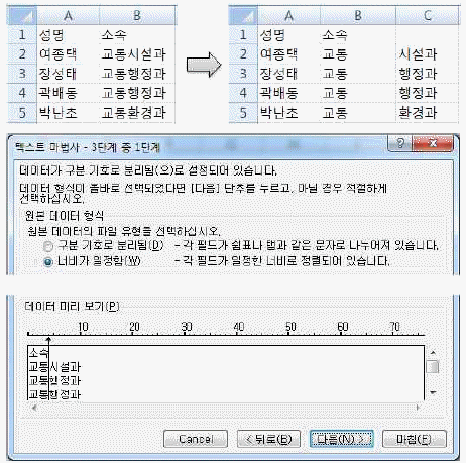
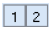
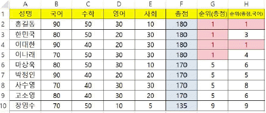
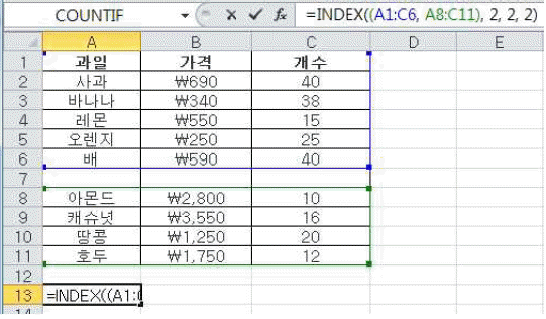
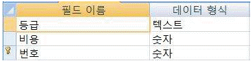

컴퓨터활용능력-1급 (2016-10-22 기출문제)
1과목: 컴퓨터 일반
1. 다음 중 네트워크 연결을 위한 동배간처리(Peer-To-Peer) 방식에 대한 설명으로 옳지 않은 것은?
- 컴퓨터와 컴퓨터가 동등하게 연결되는 방식이다.
- 각각의 컴퓨터는 클라이언트인 동시에 서버가 될 수 있다.
- 워크스테이션이나 PC를 단말기로 사용하는 작은 규모의 네트워크에 많이 사용된다.
- 유지보수가 쉽고 데이터의 보안이 우수하며 주로 데이터의 양이 많을 때 사용한다.
(정답률: 70%)

2. 다음 중 멀티미디어의 특징으로 옳지 않은 것은?
- 디지털 데이터로 변환하여 통합 처리한다.
- 정보 제공자와 사용자 간의 상호 작용에 의해 데이터가 전달된다.
- 데이터가 사용자 선택에 따라 순차적으로 처리되는 선형성의 특징을 가진다.
- 문자, 그림, 사운드 등의 여러 미디어를 통합하여 처리한다.
(정답률: 88%)
3. 다음 중 컴퓨터의 그래픽 데이터 표현에 사용되는 벡터 방식에 대한 설명으로 옳지 않은 것은?
- 이미지를 화소(pixel)의 집합으로 표현하는 방식이다.
- 점과 점을 연결하는 직선과 곡선을 이용하여 이미지를 그린다.
- 이미지를 확대하거나 축소하여도 계단 현상이 발생하지 않는다.
- 파일 형식은 WMF, AI 등이 있다.
(정답률: 81%)
4. 다음 중 정보보안을 위해 사용하는 공개키 암호화 기법에 대한 설명으로 옳지 않은 것은?
- 알고리즘이 복잡하며 암호화와 복호화 속도가 느리다.
- 키의 분배가 용이하고 관리해야 할 키의 수가 적다.
- 비대칭 암호화 기법이라고도 하며 대표적으로 DES가 있다.
- 데이터를 암호화할 때 사용하는 키를 공개하고 복호화 할 때 키는 비밀로 한다.
(정답률: 78%)
5. 다음 중 인터넷에서 사용하는 URL에 관한 설명으로 옳지 않은 것은?
- 인터넷 상에 존재하는 각종 자원의 위치를 나타내는 표준 주소 체계이다.
- URL의 일반적인 형식은 프로토콜://호스트주소[:포트번호][/파일경로]이다.
- FTP계정이 있는 경우의 URL은 ‘http://user_name:
password@server_name:port_number’ 형식을 사용한다. - 일반적으로 HTTP 서비스는 80번 포트를 사용한다.
(정답률: 81%)
6. 다음 중 소프트웨어의 저작권에 따른 분류에서 데모버전과 가장 유사한 분류에 해당하는 것은?
- 프리웨어(Freeware)
- 셰어웨어(Shareware)
- 포스트카드웨어(Postcardware)
- 상용 소프트웨어(Commercial Software)
(정답률: 79%)
7. 다음 중 시스템 보안을 위해 사용하는 방화벽(Firewall)에 대한 설명으로 옳지 않은 것은?
- IP주소 및 포트번호를 이용하거나 사용자 인증을 기반으로 접속을 차단하여 네트워크의 출입로를 단일화 함으로써 보안 관리 범위를 좁히고 접근제어를 효율적으로 할 수 있다.
- ‘명백히 금지되지 않은 것은 허용한다’는 소극적 방어 개념이 아니라 ‘명백히 허용되지 않은 것은 금지한다’라는 적극적 방어 개념을 가지고 있다.
- 방화벽을 운영하면 네트워크의 부하가 감소되며, 네트워크 트래픽이 게이트웨이로 집중된다.
- 로그 정보를 통해 누가 외부에서 침입을 시도했는지 그 흔적을 찾아 역추적을 할 수 있다.
(정답률: 79%)
8. 다음 중 와이파이(Wi-Fi)에 대한 설명으로 옳지 않은 것은?
- IEEE 802.11 기술 규격의 브랜드명으로 wireless fidelity의 약어이다.
- 무선 신호를 전달하는 AP(access point)를 중심으로 데이터를 주고 받는 인프라스트럭쳐(infrastructure) 모드와 AP 없이 데이터를 주고 받는 애드혹(ad hoc) 모드가 있다.
- 유선랜을 무선화한 것이기 때문에 사용 거리에 제한이 없고 전송속도가 3G 이동통신에 비해 느리며 전송비용이 고가이다.
- IEEE 802.11b 규격은 최대 11Mbps, IEEE 802.11g 규격은 최대 54Mbps의 속도를 지원한다.
(정답률: 87%)
9. 다음 중 인터넷 서버까지의 경로를 추적하는 명령어인 ‘Tracert’의 실행 결과에 관한 설명으로 옳지 않은 것은?
- IP 주소, 목적지까지 거치는 경로의 수, 각 구간 사이의 데이터 왕복 속도를 확인할 수 있다.
- 특정 사이트가 열리지 않을 때 해당 서버가 문제인지 인터넷 망이 문제인지 확인할 수 있다.
- 인터넷 속도가 느릴 때 어느 구간에서 정체를 일으키는지 확인할 수 있다.
- 현재 자신의 컴퓨터에 연결된 다른 컴퓨터의 IP 주소나 포트 정보를 확인할 수 있다.
(정답률: 81%)
10. 다음 중 컴퓨터에서 사용하는 하드디스크의 파티션에 관한 설명으로 옳지 않은 것은?
- 파티션 작업을 실행한 후에는 반드시 포맷을 실행하여야 하드디스크를 사용할 수 있다.
- 각 파티션 영역에는 다른 운영체제를 설치할 수 있다.
- 하나의 파티션에 여러 개의 파일 시스템을 사용할 수 있다.
- 하나의 물리적인 하드디스크를 여러 개의 논리적 영역으로 분할하거나 다시 합치는 작업이다.
(정답률: 56%)
11. 다음 중 Windows 7의 [메모장]에 관한 설명으로 옳지 않은 것은?(윈도우 10 검증 완료)
- 텍스트 파일이나 웹 페이지를 편집하는 간단한 도구로 사용할 수 있다.
- [이동] 명령으로 원하는 줄 번호를 입력하여 문서의 특정 줄로 이동할 수 있으며, 자동 줄 바꿈이 설정된 경우에도 이동 명령을 사용할 수 있다.
- 특정 문자나 단어를 찾아서 바꾸거나, 창 크기에 맞추어 텍스트 줄을 바꾸어 문서의 내용을 표시할 수 있다.
- 머리글과 바닥글을 설정하여 문서의 위쪽과 아래쪽 여백에 원하는 텍스트를 표시하여 인쇄할 수 있다.
(정답률: 58%)
12. 다음 중 컴퓨터에서 문자를 표현하는 코드 체계에 대한 설명으로 옳지 않은 것은?
- BCD 코드: 64가지의 문자를 표현할 수 있으나 영문 소문자는 표현 불가능하다.
- Unicode: 세계 각국의 언어를 4바이트 체계로 통일한 국제 표준 코드이다.
- ASCII 코드: 128가지의 문자를 표현할 수 있으며, 주로 데이터 통신용이나 PC에서 많이 사용된다.
- EBCDIC 코드: BCD 코드를 확장한 코드체계로 256가지의 문자를 표현할 수 있다
(정답률: 76%)
13. 다음 중 컴퓨터에서 사용하는 데이터의 논리적 구성 단위를 작은 것에서 큰 것 순으로 바르게 나열한 것은?
- 비트(Bit) - 바이트(Byte) - 레코드(Record) - 워드(Word)
- 워드(Word) - 필드(Field) - 바이트(Byte) - 레코드(Record)
- 워드(Word) - 필드(Field) - 파일(File) - 레코드(Record)
- 필드(Field) - 레코드(Record) - 파일(File) - 데이터베이스(Database)
(정답률: 72%)
14. 다음 중 Windows 7의 [장치 관리자] 창에서 설정 가능한 하드웨어 관리에 대한 설명으로 옳지 않은 것은?(윈도우 10 검증 완료)
- 장치들의 드라이버를 식별하고, 설치된 장치 드라이버에 대한 정보를 알 수 있다.
- 가상 메모리에 대한 정보를 확인하고, 설정 값을 변경할 수 있다.
- 장치 드라이버를 업데이트할 수 있다.
- 하드웨어가 올바르게 작동하는지 확인할 수 있다.
(정답률: 73%)
15. 다음 중 컴퓨터에서 사용하는 마이크로프로세서(Microprocessor)에 관한 설명으로 옳지 않은 것은?
- 제어장치, 연산장치, 주기억장치가 하나의 반도체 칩에 내장된 장치이다.
- 클럭 주파수와 내부 버스의 Bit 수로 성능을 평가한다.
- 트랜지스터의 집적도에 따라 기본적인 처리 속도가 결정된다.
- 현재는 작은 규모의 임베디드 시스템이나 휴대용 기기에서부터 메인 프레임이나 슈퍼컴퓨터까지 사용된다.
(정답률: 74%)
16. 다음 중 레지스터(Register)에 대한 설명 중 옳지 않은 것은?
- CPU 내부에서 처리할 명령어나 연산 결과 값을 일시적으로 저장하는 기억장치이다.
- 레지스터의 크기는 컴퓨터가 한 번에 처리할 수 있는 데이터의 크기를 나타낸다.
- 펌웨어(Firmware)를 저장하는 비휘발성 메모리로 엑세스 속도가 가장 빠른 기억장치이다.
- 구조는 플립플롭(Flip-Flop)이나 래치(Latch)를 직렬 또는 병렬로 연결한다.
(정답률: 68%)
17. 다음 중 Windows 7의 [관리 도구] 중 [컴퓨터 관리]에서 수행 가능한 [디스크 관리] 작업에 해당하지 않는 것은?(윈도우 10 검증 완료)
- 볼륨을 확장하거나 축소할 수 있다.
- 드라이브 문자를 변경할 수 있다.
- 포맷을 실행할 수 있다.
- 분석 및 디버그 로그를 표시할 수 있다.
(정답률: 67%)
18. 다음 중 Windows 7의 [제어판]-[백업 및 복원]에서 ‘백업 설정’에 대한 설명으로 옳지 않은 것은?(윈도우 10 검증 완료)
- 정기적으로 예약된 백업 시간에 컴퓨터가 꺼져 있거나, 절전 모드이거나, 최대 절전 모드인 경우 Windows 백업에서는 해당 백업을 건너뛰고 예약된 다음 백업 때까지 기다린다.
- ‘자동 선택’ 방식으로 백업하는 경우 해당 컴퓨터에 사용자 계정이 있는 모든 사용자의 기본 Windows 폴더, 바탕 화면 및 라이브러리에 저장된 데이터 파일을 백업 한다.
- ‘직접 선택’ 방식으로 백업하는 경우 사용자가 알려진 시스템 폴더의 모든 파일을 선택하여 백업할 수 있다.
- 기본적으로 백업은 정기적으로 만들어지며, 일정을 변경 하고 백업을 수동으로 만들 수 있다.
(정답률: 60%)
19. 다음 중 Windows 7에서 [연결 프로그램]에 대한 설명으로 옳지 않은 것은?(윈도우 10 검증 완료)
- 문서나 그림 같은 데이터 파일을 더블클릭하면 자동으로 실행되는 응용 프로그램이다.
- 데이터 파일의 바로 가기 메뉴에서 [연결 프로그램]을 선택하면 연결 프로그램을 변경할 수 있다.
- 연결 프로그램이 지정되지 않았을 경우 데이터 파일을 더블클릭하면 연결 프로그램을 선택하기 위한 대화 상자가 표시된다.
- [연결 프로그램] 대화상자에서 연결 프로그램을 삭제하면 연결된 데이터 파일도 함께 삭제된다.
(정답률: 88%)
20. 다음 중 반도체를 이용한 컴퓨터 보조 기억 장치로 크기가 작고 충격에 강하며, 소음 발생이 없는 대용량 저장 장치에 해당하는 것은?
- HDD(Hard Disk Drive)
- DVD(Digital Versatile Disk)
- SSD(Solid State Drive)
- CD-RW(Compact Disc Rewritable)
(정답률: 91%)
2과목: 스프레드시트 일반
21. 다음 중 데이터 입력에 대한 설명으로 옳지 않은 것은?
- 동일한 문자를 여러 개의 셀에 입력하려면 셀에 문자를 입력한 후 채우기 핸들을 드래그한다.
- 두 개 이상의 셀을 선택하고 채우기 핸들을 드래그할 때 <Ctrl>키를 누르고 있으면 [자동 채우기] 기능을 해제할 수 있으며, 선택한 값은 인접한 셀에 복사되고 데이터가 연속으로 확장되지 않는다.
- 일정 범위 내에 동일한 데이터를 한 번에 입력하려면 범위를 지정하여 데이터를 입력한 후 바로 이어서 <Shift>+<Enter>키를 누른다.
- 사용자 지정 연속 데이터 채우기를 사용하여 데이터를 입력하는 경우 사용자 지정 목록에는 텍스트나 텍스트/숫자 조합만 포함될 수 있다.
(정답률: 72%)
22. 아래의 워크시트에서 ‘영어’가 중간값을 초과하면서 ‘성명’의 두 번째 문자가 “영”인 데이터를 필터링하고자 한다. 다음 중 고급 필터 실행을 위한 조건의 입력 값으로 옳은 것은?





(정답률: 63%)
23. 다음 중 아래와 같이 왼쪽 그림의 [B2:B5] 영역에 [텍스트 나누기]를 실행하여 오른쪽 그림과 같이 소속이 분리되도록 실행하는 과정에 대한 설명으로 옳지 않은 것은?

- 텍스트 마법사 2단계에서 구분선의 위치를 변경하려면 구분선을 마우스로 클릭한 상태에서 원하는 위치로 드래그한다.
- 분할하려는 범위에 포함할 수 있는 행과 열의 개수는 제한이 없다.
- 구분선을 삭제하려면 구분선을 마우스로 두 번 클릭한다.
- 구분선을 넣으려면 원하는 위치를 마우스로 클릭한다.
(정답률: 77%)
24. 다음 중 엑셀의 오차 막대에 대한 설명으로 옳지 않은 것은?
- 3차원 차트는 오차 막대를 표시할 수 없다.
- 차트에 고정값, 백분율, 표준 편차, 표준 오차, 사용자 지정 중 하나를 선택하여 오차량을 표시할 수 있다.
- 오차 막대를 화면에 표시하는 방법은 2가지로 양의 값, 음의 값이 있다.
- 분산형과 거품형차트에는 세로 오차 막대, 가로 오차 막대를 적용할 수 있다.
(정답률: 54%)
25. 다음 중 워크시트의 데이터 목록에 윤곽 설정을 하는 경우 옳지 않은 것은?
- 그룹화하여 요약하려는 데이터 목록이 있는 경우 데이터에 최대 8개 수준의 윤곽을 설정할 수 있다.

, , 등의 윤곽 기호가 표시되지 않는 경우 [Excel 옵션]에서 표시되도록 설정할 수 있다.- 그룹별로 요약된 데이터에 설정된 윤곽을 제거하면 윤곽 기호와 함께 요약 정보가 표시된 원본 데이터도 삭제된다.
- 윤곽을 만들 때나 만든 후에 윤곽에 스타일을 적용할 수 있다.
(정답률: 82%)
26. 다음 중 시나리오에 대한 설명으로 옳지 않은 것은?
- 시나리오 관리자에서 시나리오를 삭제하면 시나리오 요약 보고서의 해당 시나리오도 자동으로 삭제된다.
- 특정 셀의 변경에 따라 연결된 결과 셀의 값이 자동으로 변경되어 결과값을 예측할 수 있다.
- 여러 시나리오를 비교하기 위해 시나리오를 피벗 테이블로 요약할 수 있다.
- 변경 셀과 결과 셀에 이름을 지정한 후 시나리오 요약 보고서를 작성하면 결과에 셀 주소 대신 지정한 이름이 표시된다.
(정답률: 65%)
27. 다음 중 조건부 서식에 대한 설명으로 옳지 않은 것은?
- 동일한 셀 범위에 둘 이상의 조건부 서식 규칙이 True로 평가 되어 충돌하는 경우 [조건부 서식 규칙 관리자] 대화상자의 규칙 목록에서 가장 위에 있는 즉, 우선순위가 높은 규칙 하나만 적용된다.
- [홈] 탭 [편집] 그룹의 [찾기 및 선택]-[이동 옵션]을 이용하면 조건부 서식이 적용되고 있는 셀을 적용한 순서대로 찾아 이동할 수 있다.
- 조건부 서식을 만들 때 조건으로 다른 워크시트 또는 통합 문서에 참조는 사용할 수 없다.
- 셀 범위에 대한 서식 규칙이 True로 평가되면 해당 규칙의 서식이 사용자가 임의로 지정한 서식보다 우선한다.
(정답률: 31%)
28. 다음 중 각 VBA 코드에 대한 설명으로 옳지 않은 것은?
- Range(“A5”).Select ⇒ [A5] 셀로 셀 포인터를 이동한다.
- Range(“C2”).Font.Bold = “True” ⇒ [C2] 셀의 글꼴 스타일을 '굵게'로 설정한다.
- Range(“A1”).Formula = 3 * 4 ⇒ [A1] 셀에 수식 ‘=3*4’가 입력된다.
- Workbooks.Add ⇒ 새 통합 문서를 생성한다.
(정답률: 70%)
29. 다음 중 [H2:H10] 영역에 ‘총점’으로 순위를 구한 후 동점자에 대해 ‘국어’로 순위를 구할 경우 [H2] 셀에 들어갈 수식으로 옳은 것은?

- {=RANK($F2,$F$2:$F$10) + RANK($B$2,$B$2:$B$10) }
- {=RANK($B$2,$B$2:$B$10) * RANK($F2,$F$2:$F$10) }
- {=RANK($F2,$F$2:$F$10) + SUM(($F$2:$F$10=$F2) * ($B$2:$B$10>$B2)) }
- {=SUM(($F$2:$F$10=$F2) * ($B$2:$B$10>$B2)) * RANK($F2,$F$2:$F$10) }
(정답률: 65%)
30. 다음 중 셀의 내용을 편집할 수 있는 셀의 편집 모드로 전환하는 방법에 대한 설명으로 옳지 않은 것은?
- 편집하려는 데이터가 있는 셀을 더블 클릭한다.
- 편집하려는 셀을 클릭하고 수식 입력줄을 클릭한다.
- 셀을 선택한 후 <F2>키를 누르면 셀에 입력된 내용의 맨 앞에 삽입 포인터가 나타난다.
- 새 문자를 입력하여 기존 문자를 즉시 바꿀 수 있도록 겹쳐쓰기 모드를 활성화하려면 편집모드 상태에서 <Insert>키를 누른다.
(정답률: 64%)
31. 다음 중 [개발 도구] 탭의 [컨트롤] 그룹에 대한 설명으로 옳지 않는 것은?
- 컨트롤은 데이터 표시/입력 또는 작업 수행을 위해 양식에 넣은 그래픽 개체로 텍스트 상자, 목록 상자, 옵션 단추, 명령 단추 등이 있다.
- ActiveX 컨트롤은 양식 컨트롤 보다 다양한 이벤트에 반응할 수 있으나 차트 시트에서는 사용할 수 없는 등 양식 컨트롤보다 호환성은 낮다.
- [디자인 모드] 상태에서는 양식 컨트롤과 ActiveX 컨트롤 모두 매크로 등 정해진 동작은 실행하지 않으며, 컨트롤의 선택, 크기 조절, 이동 등의 작업을 할 수 있다.
- 양식 컨트롤의 ‘단추(양식 컨트롤)’를 클릭하거나 드래그해서 추가하면 [매크로 지정] 대화상자가 자동으로 표시된다.
(정답률: 67%)
32. 다음 중 메모 기능에 대한 설명으로 옳지 않은 것은?
- 새 메모를 작성하려면 <Shift>+<F2> 키를 누른다.
- 메모 텍스트에는 [홈] 탭의 [글꼴] 그룹에 있는 [채우기 색]과 [글꼴 색] 옵션을 사용할 수 없다.
- 삽입된 메모는 시트에 표시된 대로 인쇄하거나 시트 끝에 모아서 인쇄할 수 있다.
- [홈] 탭 [편집] 그룹에 있는 [지우기]-[모두 지우기]를 이용하여 셀을 지운 경우 셀의 내용과 서식만 삭제되고 메모는 삭제되지 않는다.
(정답률: 61%)
33. 다음 중 세로 막대형 차트에 대한 설명으로 옳지 않은 것은?
- 시간의 경과에 따른 데이터 변동을 표시하거나 항목별 비교를 나타내는 데 유용하다.
- [계열 겹치기] 값을 0에서 100 사이의 백분율로 조정 하여 세로 막대의 겹침 상태를 조정할 수 있으며, 값이 높을수록 세로 막대 사이의 간격이 증가한다.
- [간격 너비] 값을 0에서 500 사이의 백분율로 조정하여 각 항목에 대해 표시되는 데이터 요소 집합 사이의 간격을 조정할 수 있다.
- 세로(값) 축 값의 순서를 거꾸로 표시할 수 있다.
(정답률: 73%)
34. 다음 중 공유 통합 문서에 대한 설명으로 옳지 않은 것은?
- 여러 사용자가 동시에 동일한 셀을 변경하려면 충돌이 발생한다.
- 통합 문서를 공유한 후 하이퍼링크, 시나리오, 매크로 등의 기능은 변경할 수 없지만 조건부 서식, 차트, 그림 등의 기능은 변경할 수 있다.
- 공유 통합 문서를 네트워크 위치에 복사해도 다른 통합 문서나 문서의 연결은 그대로 유지된다.
- 공유 통합 문서를 열면 창의 제목 표시줄의 엑셀 파일명 옆에 [공유]라는 글자가 표시된다.
(정답률: 64%)
35. 다음 중 인쇄 기능에 대한 설명으로 옳지 않은 것은?
- 기본적으로 워크시트의 눈금선은 인쇄되지 않으나 인쇄되도록 설정할 수 있다.
- [페이지 설정] 대화상자의 [시트] 탭에서‘간단하게 인쇄’를 선택하면 셀의 테두리를 포함하여 인쇄할 수 있다.
- <Ctrl>+<F2>키를 누르면 [인쇄 미리 보기]가 실행된다.
- [인쇄 미리 보기]에서 ‘여백 표시’를 선택한 경우 마우스로 여백을 변경할 수 있다.
(정답률: 74%)
36. 다음 중 [A13] 셀에 수식‘=INDEX((A1:C6, A8:C11), 2, 2, 2)’을 입력한 결과로 옳은 것은?

- 690
- 340
- 2,800
- 3,550
(정답률: 80%)
37. 다음 중 수식의 결과가 옳지 않은 것은?
- =FIXED(3456.789,1,FALSE) → 3,456.8
- =EOMONTH(DATE(2015,2,25),1) → 2015-03-31
- =CHOOSE(ROW(A3:A6), "동","서","남",2015) → 남
- =REPLACE("February", SEARCH("U","Seoul-Unesco"),5,"") → Febru
(정답률: 71%)
38. 다음 중 3차원 참조에 대한 설명으로 옳지 않은 것은?
- 여러 워크시트에 있는 동일한 셀 데이터나 셀 범위 데이터에 대한 참조를 뜻한다.
- ‘Sheet2’부터 ‘Sheet4’까지의 [A2] 셀을 모두 더하라는 식을 ‘=SUM(Sheet2:Sheet4!A2)’와 같이 3차원 참조로 표현할 수 있다.
- SUM, AVERAGE, COUNTA, STDEV 등의 함수를 사용할 수 있다.
- 배열 수식에 3차원 참조를 사용할 수 있다.
(정답률: 65%)
39. 다음 중 워크시트 사용에 관한 설명으로 옳지 않은 것은?
- 현재 워크시트의 앞이나 뒤의 시트를 선택할 때에는 <Ctrl>+<Page Up>키와 <Ctrl>+<Page Down>키를 이용한다.
- 현재 워크시트의 왼쪽에 새로운 시트를 삽입할 때에는 <Shift>+<F11>키를 누른다.
- 연속된 여러 개의 시트를 선택할 때에는 첫 번째 시트를 선택하고 <Shift>키를 누른 채 마지막 시트의 시트 탭을 클릭한다.
- 그룹으로 묶은 시트에서 복사하거나 잘라낸 모든 데이터는 다른 한 개의 시트에 붙여 넣을 수 있다.
(정답률: 60%)
40. 다음 중 워크시트의 인쇄 영역 설정에 대한 설명으로 옳지 않은 것은?
- 인쇄 영역을 정의한 후 워크시트를 인쇄하면 해당 인쇄 영역만 인쇄된다.
- 사용자가 설정한 인쇄 영역은 엑셀을 종료하면 인쇄 영역 설정이 자동으로 해제된다.
- 필요한 경우 기존 인쇄 영역에 다른 영역을 추가하여 인쇄 영역을 확대할 수 있다.
- 인쇄 영역으로 여러 영역이 설정된 경우 설정한 순서대로 각기 다른 페이지에 인쇄된다.
(정답률: 58%)
3과목: 데이터베이스 일반
41. 다음 중 관계형 데이터베이스에 대한 설명으로 옳지 않은 것은?
- 개념적으로 개체와 관계로 구성된다.
- 개체의 특성이나 상태를 기술해 주는 것을 개체 인스턴스(Instance)라 한다.
- 개체와 관계를 도식으로 표현한 것을 ER 다이어그램이라 한다.
- 관계는 개체 관계와 속성 관계로 나누어 볼 수 있다.
(정답률: 63%)
42. 다음 중 데이터 조작어(DML: Data Manipulation Language)에 대한 설명으로 옳지 않은 것은?
- 사용자가 응용 프로그램을 통하여 데이터베이스에 저장된 데이터를 액세스하거나 조작할 수 있도록 하는 언어이다.
- 비절차식 데이터 조작 언어는 사용자가 어떠한 데이터가 필요한지를 명시할 뿐, 어떻게 구하는지는 명시할 필요가 없다.
- 비절차식 데이터 조작 언어는 절차식 데이터 조작 언어보다 배우기 쉽고 사용하기 쉽지만 코드의 효율성은 떨어진다.
- SELECT, UPDATE, CREATE, DELETE 문이 해당된다.
(정답률: 55%)
43. 다음 중 쿼리 실행 시 값이나 패턴을 묻는 메시지를 표시한 후 사용자에게 조건 값을 입력받아 사용하는 쿼리는?
- 선택 쿼리
- 요약 쿼리
- 매개 변수 쿼리
- 크로스탭 쿼리
(정답률: 69%)
44. 다음 중 [우편물 레이블 마법사]를 이용한 보고서 작성에 대한 설명으로 옳지 않은 것은?
- 마법사로 완성된 보고서의 [인쇄 미리 보기] 상태에서는 [페이지 설정] 대화 상자를 사용하여 레이블 사이의 간격이나 여백을 변경할 수 있다.
- 마법사의 각 단계에서 레이블 크기, 텍스트 모양, 사용 가능한 필드, 정렬 기준 등을 지정할 수 있다.
- 마법사의 마지막 단계에서 ‘인쇄될 우편물 레이블 미리 보기’를 선택한 경우 완성된 보고서가 [인쇄 미리 보기] 상태로 표시된다.
- 마법사에서 사용 가능한 필드 지정 시 우편물 레이블에 추가 가능한 필드의 개수는 최대 5개이다.
(정답률: 69%)
45. 다음 중 보고서의 [그룹, 정렬 및 요약] 창을 이용한 정렬 및 그룹 설정에 대한 설명으로 옳지 않은 것은?
- 보고서의 그룹 수준 및 정렬 수준은 최대 10개까지 정의할 수 있다.
- 그룹 수준을 삭제하는 경우 그룹 머리글 또는 그룹 바닥글 구역에 삽입되어 있는 모든 컨트롤들은 자동으로 본문 구역으로 이동된다.
- ‘전체 그룹을 같은 페이지에 표시’ 옵션을 선택한 경우 페이지의 나머지 공간에 그룹을 표시할 수 없는 경우 빈 공간으로 두고 대신 다음 페이지에서 그룹이 시작된다.
- 그룹 간격 옵션은 레코드가 그룹화되는 방식을 결정하는 설정이며, 텍스트 필드인 경우 '전체 값', '첫 문자', '처음 두 문자', '사용자 지정 문자'를 기준으로 그룹화 할 수 있다.
(정답률: 51%)
46. 다음 중 보고서의 각 구역에 대한 설명으로 옳지 않은 것은?
- ‘페이지 머리글’은 인쇄 시 모든 페이지의 맨 위에 출력되며, 모든 페이지에 특정 내용을 반복하려는 경우 사용한다.
- ‘보고서 머리글’은 보고서의 맨 앞에 한 번 출력되며, 함수를 이용한 집계정보를 표시할 수 없다.
- ‘그룹 머리글’은 각 새 레코드 그룹의 맨 앞에 출력되며, 그룹 이름이나 그룹별 계산결과를 표시할 때 사용한다.
- ‘본문’은 레코드 원본의 모든 행에 대해 한 번씩 출력되며, 보고서의 본문을 구성하는 컨트롤이 추가된다.
(정답률: 64%)
47. 다음 중 아래와 같은 필드로 구성된 <SERVICE> 테이블에서 실행 가능한 쿼리로 적절하지 않은 것은?

- INSERT INTO SERVICE(등급, 비용) VALUES ('C', 7000);
- UPDATE SERVICE SET 등급 = 'C' WHERE 등급 = 'D';
- INSERT INTO SERVICE (등급, 비용, 번호) VALUES('A', 10000, 10);
- UPDATE SERVICE SET 비용 = 비용*1.1;
(정답률: 44%)
48. 다음 중 <도서> 테이블에서 정가 필드의 값이 10000 이상이면서 20000 이하인 도서를 검색하기 위한 SQL문으로 옳은 것은?
- SELECT * FROM 도서 WHERE 정가 IN (10000, 20000)
- SELECT * FROM 도서 WHERE 정가 > 10000 OR 정가 < 20000
- SELECT * FROM 도서 WHERE 10000 <= 정가 <= 20000
- SELECT * FROM 도서 WHERE 정가 BETWEEN 10000 AND 20000
(정답률: 68%)
49. 다음 중 <사원> 테이블에서 주소가 ‘서울’인 사원의 이름과 부서를 입사년도가 오래된 사원부터 최근인 사원의 순서로 검색하기 위한 SQL문으로 옳은 것은?
- SELECT 이름, 부서 FROM 사원 ORDER BY 주소=‘서울’ ASC WHERE 입사년도;
- SELECT 이름, 부서 FROM 사원 ORDER BY 입사년도 DESC WHERE 주소=‘서울’;
- SELECT 이름, 부서 FROM 사원 WHERE 입사년도 ORDER BY 주소=‘서울’ DESC;
- SELECT 이름, 부서 FROM 사원 WHERE 주소=‘서울’ ORDER BY 입사년도 ASC;
(정답률: 63%)
50. 다음 중 인덱싱된 테이블 형식 Recordset 개체에서 현재 인덱스에 지정한 조건에 맞는 레코드를 검색하여 현재 레코드로 설정하는 Recordset 객체의 메서드는?
- Seek
- Move
- Find
- Search
(정답률: 53%)
51. 다음 중 모듈에 대한 설명으로 적절하지 않은 것은?
- 모듈은 표준 모듈과 클래스 모듈로 구분된다.
- 사용자 정의 개체를 만들 때에는 표준 모듈만 사용한다.
- 선언부에서는 변수, 상수, 외부 프로시저 등을 정의한다.
- 폼의 이벤트 프로시저로 작성된 모듈은 폼과 함께 저장 된다.
(정답률: 59%)
52. 다음 중 Access의 기본 키에 대한 설명으로 옳지 않은 것은?
- 기본 키는 테이블의 [디자인 보기] 상태에서 설정할 수 있다.
- 기본 키로 설정된 필드에는 널(NULL) 값이 허용되지 않는다.
- 기본 키로 설정된 필드에는 항상 고유한 값이 입력되도록 자동으로 확인된다.
- 관계가 설정되어 있는 테이블의 기본 키를 해제하면 해당 테이블의 관계도 삭제된다.
(정답률: 65%)
53. 다음 중 기본 폼과 하위 폼을 연결하기 위한 기본 조건에 대한 설명으로 옳지 않은 것은?
- 기본 필드와 하위 필드의 데이터 형식과 필드의 크기는 같거나 호환되어야 한다.
- 중첩된 하위 폼은 최대 2개 수준까지 만들 수 있다.
- 테이블 간에 관계가 설정되어 있지 않은 경우에도 하위 폼으로 연결할 수 있다.
- 하위 폼의 ‘기본 필드 연결’ 속성은 기본 폼을 하위 폼에 연결해 주는 기본 폼의 필드를 지정하는 속성이다.
(정답률: 70%)
54. 다음 중 Access에서 테이블의 관계 설정에 대한 설명으로 옳지 않은 것은?
- [관계] 문서 탭에서 해당 관계에 대해 참조 무결성, 조인 유형 등을 설정할 수 있다.
- A 테이블과 A 테이블의 기본 키를 외래키로 사용하는 B 테이블 간에 관계를 설정하는 경우 관계 종류는 ‘일대다 관계’로 자동 지정된다.
- 이미 [디자인 보기] 상태로 열려 있는 테이블에 대한 관계 설정 시 해당 테이블은 자동 저장되어 닫힌다.
- 테이블 관계를 제거하려면 관계선을 클릭하여 더 굵게 표시된 상태에서 <Delete> 키를 누른다.
(정답률: 57%)
55. 다음 중 특정 필드의 입력 마스크를 ‘LA09#’으로 설정하였을 때 입력 가능한 데이터로 옳은 것은?
- 12345
- A상345
- A123A
- A1BCD
(정답률: 74%)
56. 다음 중 폼 작성에 관한 설명으로 옳지 않은 것은?
- 여러 개의 컨트롤을 선택하여 자동 정렬할 수 있다.
- 컨트롤의 탭 순서는 자동으로 화면 위에서 아래로 지정된다.
- 사각형, 선 등의 도형 컨트롤을 삽입할 수 있다.
- 컨트롤 마법사를 사용하여 폼을 닫는 매크로를 실행시키는 단추를 만들 수 있다.
(정답률: 66%)
57. 다음 중 폼이나 보고서에서 사용되는 컨트롤에 대한 설명으로 옳지 않은 것은?
- ‘페이지 번호’ 컨트롤을 추가하는 경우 페이지 번호식을 포함한 ‘텍스트 상자’ 컨트롤이 삽입된다.
- ‘목록 상자’ 컨트롤은 바운드 또는 언바운드 컨트롤로 사용할 수 있다.
- ‘로고’ 컨트롤을 추가하는 경우 머리글 구역에 ‘이미지’ 컨트롤이 삽입된다.
- ‘예/아니요’ 필드를 추가하는 경우 기본적으로 ‘토글 단추’ 컨트롤이 삽입된다.
(정답률: 48%)
58. 다음 중 <학생> 테이블의 ‘성적’ 필드에 성적을 입력 하는 경우 0에서 100 사이의 숫자만 입력 가능하도록 설정하기 위한 필드 속성은?
- 필드 크기
- 필수
- 유효성 검사 규칙
- 기본값
(정답률: 73%)
59. 다음 중 폼에 대한 설명으로 옳지 않은 것은?
- 분할 표시 폼을 이용하여 동일한 테이블에 대한 전체 목록과 각 레코드에 대한 단일 폼을 함께 보여줄 수 있다.
- [레이아웃 보기] 상태에서는 [필드 목록] 창을 이용하여 원본으로 사용하는 테이블이나 쿼리의 필드를 추가할 수 있다.
- 일반적으로 기본 폼과 하위 폼은 일대다 관계이다.
- [폼 보기] 상태에서는 [컨트롤] 그룹의 ‘로고’, ‘제목’, ‘날짜 및 시간’ 등의 제한적 컨트롤만 사용 가능하다.
(정답률: 51%)
60. 다음 중 보고서에서 ‘텍스트 상자’ 컨트롤의 속성 설정에 대한 설명으로 옳지 않은 것은?
- ‘상태 표시줄 텍스트’ 속성은 컨트롤을 선택했을 때 상태 표시줄에 표시할 메시지를 설정한다.
- ‘컨트롤 원본’ 속성에서 함수나 수식 사용 시 문자는 작은따옴표(‘), 필드명이나 컨트롤 이름은 큰따옴표(“)를 사용하여 구분한다.
- ‘사용 가능’ 속성은 컨트롤에 포커스를 이동시킬 수 있는지의 여부를 설정한다.
- ‘중복 내용 숨기기’ 속성은 데이터가 이전 레코드와 같을 때 컨트롤을 숨길지의 여부를 설정한다.
(정답률: 74%)
동배간처리(Peer-To-Peer) 방식은 컴퓨터와 컴퓨터가 동등하게 연결되는 방식으로, 각각의 컴퓨터는 클라이언트이면서 동시에 서버가 될 수 있다. 이 방식은 워크스테이션이나 PC를 단말기로 사용하는 작은 규모의 네트워크에 많이 사용되며, 데이터의 양이 많을 때 유지보수가 쉽고 데이터의 보안이 우수하다는 장점이 있다. 따라서 "유지보수가 쉽고 데이터의 보안이 우수하며 주로 데이터의 양이 많을 때 사용한다."가 옳은 설명이다.